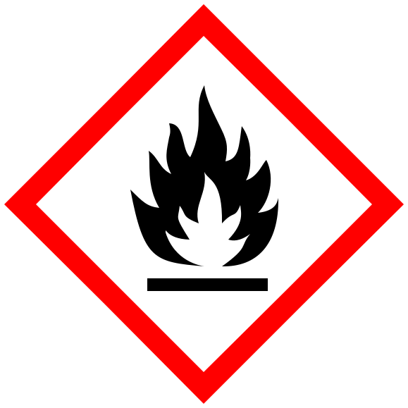
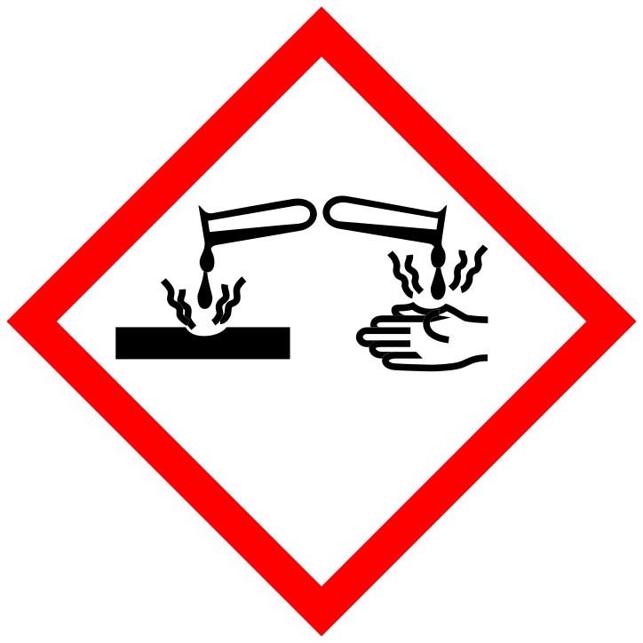

Œuvre en domaine public : affiche Work with care, 1936, gravure sur bois en couleurs, Federal Art Project, Works Progress Administration, Pennsylvanie (artiste non identifié). Library of Congress, Work Projects Administration Poster Collection, LCCN 92517365. Domaine public (œuvre du gouvernement fédéral des États-Unis). Image : Wikimedia Commons.
Télécharger la séquence, Student version (Arial 16 pt, lisible en Dys-friendly version)
Anglais · Première baccalauréat professionnel · toutes filières (production et services) · LVA, B1 (Help : A2+ vers B1 ; Going further : vers B1+)
Format retenu : mise en situation professionnelle, avec tâche finale. L’entreprise de PFMP accueille le mois prochain deux apprentis d’une entreprise partenaire de Cork, en Irlande. Le responsable demande à l’élève de préparer, en anglais, la charte santé, sécurité et hygiène de l’entreprise, puis de la présenter.
Six lessons de 55 minutes, minutées sur 52. Cette séquence de Première ne refait ni les panneaux et le lavage des mains de Seconde, ni le briefing du visiteur et le rapport d’incident de Terminale : elle travaille la loi, les responsabilités, l’hygiène des produits, l’évaluation des risques et les droits du jeune travailleur.
Question directrice : Who makes the rules that keep us safe and clean at work, and how can I explain them in English?
Thème
Santé, sécurité et hygiène au travail : la réglementation, les responsabilités, les produits, l’évaluation des risques, les droits du jeune travailleur.
Niveau
Première baccalauréat professionnel, LVA. CECRL : entrée A2+ vers B1, niveau visé B1 (B1+ en compréhension pour les plus à l’aise).
Problématique
Who makes the rules that keep us safe and clean at work, and how can I explain them in English?
Objectifs
Comprendre une règle, un texte de loi simplifié, une consigne orale de nettoyage ; expliquer une obligation et sa raison ; remplir une évaluation des risques ; demander une formation ou refuser poliment une tâche dangereuse ; rédiger et présenter une charte. Langue : le passif des règles (must be worn), have to et be responsible for, la fréquence, le conditionnel de risque (If…, someone could…), le discours rapporté.
Ancrage culturel
La loi britannique de 1974 sur la santé et la sécurité au travail et l’autorité qui la fait respecter (HSE) ; les affiches de prévention du New Deal américain (1936) ; les pictogrammes de danger communs à l’Europe et au Royaume-Uni ; la PFMP en France et les échanges Erasmus+ avec l’Irlande. Contexte du BO (BO spécial n° 5 du 11 avril 2019) : vie professionnelle (réglementation, règles de sécurité et d’hygiène), croisé avec la vie sociale et citoyenne (droits et devoirs).
Overview (Teacher version)
Public : Première baccalauréat professionnel, lycée professionnel, toutes filières. Programme : BO spécial n° 5 du 11 avril 2019, pas d’axes ; deux contextes, ici la vie professionnelle (réglementation, sécurité, hygiène) croisée avec la vie sociale et citoyenne.
Les cinq activités langagières sont travaillées : compréhension de l’oral (lessons 3 et 5), compréhension de l’écrit (lessons 1, 2, 4, 5), expression écrite (toutes), expression orale en continu et interaction (toutes, et la tâche finale).
Format : mise en situation professionnelle avec tâche finale (la charte, écrite puis présentée). Une co-intervention avec l’enseignement professionnel ou la prévention santé environnement est possible en lessons 3 et 4 : le professeur de spécialité apporte une vraie fiche de nettoyage ou une vraie évaluation des risques de l’atelier.
Ordre habituel d’une lesson : rappel ; question du jour ; document lu avec la spirale de Gorse ; Expanding your vocabulary ; Étude de la langue ; exercices avec corrigés derrière Show the answer ; oral, dont l’interaction, pour que chacun parle au moins une fois ; trace écrite ; homework. Chaque lesson a un point d’arrêt et une Plan B de 8 minutes.
L’évaluation est en Teacher version : la tâche finale (grille) et un sujet complet au format du CCF (Situation A et Situation B), qui sert d’entraînement en Première. En l’absence d’enregistrement, lire les transcripts à voix haute trois fois, une minute entre les lectures.
Lessons at a glance
Lesson
Titre
Activités
Étude de la langue
1
Work With Care
CE PO PI PE
le passif des règles
2
Who Is Responsible? The Law in a Nutshell
CE PI PE PO
have to, don’t have to, be responsible for + -ing
3
Clean Surfaces, Safe Products
CO CE PE PI
fréquence et passif au présent
4
Five Steps to Safety: the Risk Assessment
CE PE PO
If + présent, someone could / might + base verbale
5
Young Workers, Real Rights
CO CE PI PE
le discours rapporté (said, told, asked)
6
Our Safety and Hygiene Charter
PE PO PI CE
révision : la langue de la séquence
If a student cannot attend class or is in hospital
Chaque lesson a son parcours, en bas de la lesson : consignes à l’infinitif, 30 à 40 minutes, une version courte de 15 minutes en cas de fatigue.
Les réponses des exercices s’ouvrent avec « Show the answer », seulement après avoir cherché.
Pour l’oral seul : s’enregistrer ; pour l’interaction, écrire les deux rôles et les enregistrer, ou faire l’échange au téléphone avec l’enseignante.
Garder la trace écrite dans le cahier et envoyer le travail demandé par l’ENT. L’enseignante transmet l’évaluation par l’ENT ; la faire sans aide en notant l’heure de début et de fin.
Une PFMP manquée se rattrape avec l’équipe : le tuteur et l’enseignante adaptent la tâche finale à l’entreprise connue de l’élève.
Lesson 1 · Work With Care
CEPOPIPE Durée : 55 minutes, minutée sur 52.
By the end of this lesson, I can: describe a safety poster, say what has changed since 1936, and write a rule with the passive.
Question du jour : What does a poster from 1936 still say about safety today?
Document 1 : Work with care, affiche, 1936, Federal Art Project (WPA), Library of Congress, domaine public.
Document 2 · Posters for safety (training text)
In the 1930s, during the New Deal, the United States government paid artists to make posters. The Federal Art Project printed thousands of them about health, safety and education. They were hung in factories, schools and stations.
These posters use few words, strong shapes and two or three colours. They must be understood in one second, from far away. Today, safety posters still follow the same rule: a clear picture, a short message, an action to do.
Texte d’entraînement écrit pour la classe.
Spirale de Gorse · l’affiche Work with care (1936)
Le premier tour part de ce qui saute aux yeux. À chaque tour, l’idée est à l’extérieur, l’appui dans le document à l’intérieur. Quatre tours, puis la pointe.
Spirale de Gorse, quatre tours puis la pointe. Méthode conçue par Madame Carole Paoli Pompougnac.
Tableau de station
Étape
Question
Réponse
Raisonnement
Acquisition
1 Je remarque (I notice)title, top and right
What strikes me first?
The three words are huge, and the word CARE is the biggest.
The message comes before the picture: it is an order and a piece of advice.
Partir de ce qui saute aux yeux.
2 Je repère (I spot)centre of the poster
Which clues? Where exactly?
The man holds a heavy tool with both hands; he wears overalls but no gloves, no goggles, no ear protection.
In 1936, protective equipment was not visible: the poster asks for attention, not for equipment.
Relever chaque indice avec sa place dans le document.
3 Je comprends (I understand)white shapes
What does it show? What effect, what contrast?
The white curves look like speed, vibration and noise around the tool.
The danger is shown by the shapes: a rivet gun is fast, loud and powerful.
Expliquer un effet ou un contraste.
4 J’anticipe (I anticipate)today’s workshop
What do I expect? Is it confirmed?
Expected: a poster of today would show protective equipment and a rule.
Confirmed: today, the law requires the employer to provide equipment and training.
Vérifier une hypothèse dans le document.
5 Je trouve le sens (I find the meaning)the whole poster
What meaning do I defend, and what is its limit?
Safety starts with attention; today it is also written in the law.
Limit: a poster is not enough; rules, training and equipment protect people.
Relier l’analyse à la problématique.
Phrase d’appui : I notice… In the centre, I spot… This shows that… Today, …
Minutage (52 minutes)
Minutes
Étape
Activité
0 à 5
Question du jour, hypothèses sur l’affiche.
PO
5 à 17
Spirale de Gorse sur l’affiche (document 1).
CE, PO, interaction
17 à 23
Lecture du document 2, trois questions.
CE
23 à 29
Expanding your vocabulary.
CE
29 à 38
Étude de la langue : le passif des règles.
PE
38 à 46
Interaction : 1936 et aujourd’hui, en binôme.
PO, interaction
46 à 50
Lesson summary.
PE
50 à 52
Homework.
Point d’arrêt : minute 46 : l’essentiel est fait si chaque élève a dit une phrase sur l’affiche et une règle d’aujourd’hui.
Plan B (8 minutes) : montrer l’affiche ; chaque élève dit I notice… / Today, … must be worn. ; dictée de la trace écrite.
Expanding your vocabulary
Word
Meaning
Example
a hazard
something that can cause harm
A loud machine is a hazard.
a risk
the chance that harm happens
There is a risk of hearing loss.
protective equipment
gloves, goggles, helmets, ear defenders
Protective equipment must be worn.
ear defenders
protection for the ears
Ear defenders are provided in the workshop.
goggles
glasses that protect the eyes
Goggles must be worn near the grinder.
overalls
work clothes in one piece
He is wearing blue overalls.
to take care
to pay attention
Take care when you use a power tool.
Étude de la langue
Une règle affichée met souvent l’action en avant, pas la personne : on emploie le passif. Goggles must be worn. Ear defenders are provided. Food is not allowed in the workshop.
Forme : sujet + be (ou must be) + participe passé. Négation : must not be used, is not allowed.
Help : regarder la liste des participes passés (worn, used, kept, provided, allowed, cleaned).
Exercice 1. Réécrire la règle au passif.
You must wear goggles.
Goggles must be worn.
We provide gloves.
Gloves are provided.
You must not use this machine without training.
This machine must not be used without training.
Nobody allows food in the workshop.
Food is not allowed in the workshop.
Compréhension
Exercice 2. Répondre en anglais d’après le document 2.
Who paid the artists?
The United States government (during the New Deal).
Where were the posters hung?
In factories, schools and stations.
Why do safety posters use few words?
Because they must be understood in one second, from far away.
Oral et interaction
En binôme, une minute chacun : décrire l’affiche, puis dire ce qui serait différent sur une affiche de 2026. L’autre pose une question : Why? What equipment? Who provides it?
Chacun dit au moins une règle au passif.
Help : utiliser I can see… He is holding… He is not wearing…
Going further : comparer l’affiche avec une affiche de l’atelier en trois phrases, dont une au passif.
Lesson summary
Copy it into your exercise book.
Work with care (1936) is a safety poster from the New Deal. A worker is holding a rivet gun. He is not wearing gloves, goggles or ear defenders.
Today, protective equipment must be worn, and it is provided by the employer. Rules are often written in the passive: Goggles must be worn.
Homework
Apprendre les sept mots. Écrire trois règles de son atelier ou de son lieu de PFMP au passif.
Dys-friendly version
La consigne de chaque exercice est à lire seule, une phrase à la fois.
Pour la spirale, ne remplir que la colonne « Réponse », à l’oral si besoin.
Exercice 1 : les participes passés sont donnés dans l’ordre (worn, provided, used, allowed).
If a student cannot attend class or is in hospital
Observer l’affiche et faire la spirale de Gorse, colonne « Réponse » (10 min).
Lire le document 2 et faire l’exercice 2 (8 min).
Apprendre le vocabulaire et faire l’exercice 1 sur le passif (8 min).
S’enregistrer une minute : décrire l’affiche et dire deux règles d’aujourd’hui au passif (5 min).
Recopier la trace écrite.
Version courte (15 minutes) : la spirale (colonne « Réponse ») et l’exercice 1.
À envoyer par l’ENT : la spirale, les exercices 1 et 2, l’enregistrement.
Lesson 2 · Who Is Responsible? The Law in a Nutshell
CEPIPEPO Durée : 55 minutes, minutée sur 52.
By the end of this lesson, I can: understand the main duties of an employer and of a worker, and explain who is responsible for what.
Question du jour : Is safety the boss’s job, or everybody’s job?
Document · The Health and Safety at Work etc. Act 1974
In Great Britain, the main law on safety at work is the Health and Safety at Work etc. Act 1974. Its most famous sentence is in section 2:
“It shall be the duty of every employer to ensure, so far as is reasonably practicable, the health, safety and welfare at work of all his employees.”
In practice, the employer has to provide safe machines and a safe place to work, training and information, and protective equipment. The worker never pays for this equipment: the law says that an employer cannot charge employees for things done or provided for their safety.
Workers have duties too. They have to take reasonable care of themselves and of other people, cooperate with the employer, and never misuse what is provided for safety. The Health and Safety Executive (HSE) is the national body that checks that the law is respected and investigates serious accidents.
Texte d’entraînement écrit pour la classe ; citation : Health and Safety at Work etc. Act 1974, section 2(1), legislation.gov.uk, Open Government Licence v3.0.
Spirale de Gorse · la loi de 1974
Le premier tour part de ce qui saute aux yeux. À chaque tour, l’idée est à l’extérieur, l’appui dans le document à l’intérieur. Quatre tours, puis la pointe.
Spirale de Gorse, quatre tours puis la pointe. Méthode conçue par Madame Carole Paoli Pompougnac.
Tableau de station
Étape
Question
Réponse
Raisonnement
Acquisition
1 Je remarque (I notice)section 2
What strikes me first?
The law starts with the employer’s duty.
The employer has the main responsibility.
Partir de ce qui saute aux yeux.
2 Je repère (I spot)section 2
Which clues? Where exactly?
The employer must do what is reasonable and possible.
The law is realistic: it asks for reasonable measures, not for zero risk.
Relever chaque indice avec sa place dans le document.
3 Je comprends (I understand)paragraph 3
What does it show? What effect, what contrast?
The worker never pays for protective equipment.
Safety is not a cost for the worker; it is a right.
Expliquer un effet ou un contraste.
4 J’anticipe (I anticipate)paragraph 4
What do I expect? Is it confirmed?
Expected: the worker has nothing to do. Not confirmed: workers must take care and cooperate.
Safety is shared: the employer provides, the worker uses and cooperates.
Vérifier une hypothèse dans le document.
5 Je trouve le sens (I find the meaning)the whole text
What meaning do I defend, and what is its limit?
Everybody is responsible, but not in the same way.
Limit: a law exists, but it works only if people know it and apply it.
Relier l’analyse à la problématique.
Phrase d’appui : The law says that… The employer has to… The worker is responsible for…
Minutage (52 minutes)
Minutes
Étape
Activité
0 à 5
Rappel : trois règles au passif.
PO
5 à 8
Question du jour.
PO
8 à 22
Lecture du texte, spirale de Gorse.
CE
22 à 28
Expanding your vocabulary.
CE
28 à 36
Étude de la langue : have to, don’t have to, be responsible for.
PE
36 à 46
Jeu de rôle : l’employeur et le nouvel apprenti.
PI
46 à 50
Lesson summary.
PE
50 à 52
Homework.
Point d’arrêt : minute 46 : chaque binôme a joué le jeu de rôle une fois.
Plan B (8 minutes) : au tableau, deux colonnes The employer has to… / The worker has to… remplies par la classe ; dictée de la trace écrite.
Expanding your vocabulary
Word
Meaning
Example
a duty
something you must do
Safety is a duty of the employer.
an employer
the company or person who employs workers
The employer provides training.
an employee
a person paid to work for an employer
Employees must cooperate.
to provide
to give, to make available
Gloves are provided.
to charge
to ask for money
The employer cannot charge for safety equipment.
to misuse
to use in the wrong way
Never misuse a fire extinguisher.
reasonably practicable
reasonable and possible
The employer does what is reasonably practicable.
Étude de la langue
have to : une obligation (venue de la loi ou de l’entreprise). don’t have to: ce n’est pas nécessaire (et non une interdiction : l’interdiction, c’est mustn’t).
be responsible for + nom ou verbe en -ing : The employer is responsible for providing training.
Exercice 1. Compléter avec has to, have to, doesn’t have to, don’t have to ou mustn’t.
The employer ___ provide safe machines.
has to
Workers ___ pay for their goggles.
don’t have to
You ___ remove a machine guard.
mustn’t
An apprentice ___ take care of other people.
has to
Exercice 2. Écrire une phrase avec be responsible for + -ing.
the employer / train new workers
The employer is responsible for training new workers.
workers / use the equipment correctly
Workers are responsible for using the equipment correctly.
the HSE / check that the law is respected
The HSE is responsible for checking that the law is respected.
Oral et interaction
Jeu de rôle en binôme (3 minutes, puis on change) : A est l’employeur, B est le nouvel apprenti. B pose trois questions (Do I have to buy my safety shoes? Who is responsible for…? What do I have to do if…?), A répond avec la loi.
Chaque élève dit une phrase avec be responsible for.
Comparaison possible avec la France : en France, l’employeur a aussi une obligation de sécurité envers ses salariés (Code du travail).
Help : utiliser les colonnes du tableau employer / worker comme aide-mémoire.
Going further : expliquer en deux phrases so far as is reasonably practicable avec un exemple de son métier.
Lesson summary
Copy it into your exercise book.
The Health and Safety at Work etc. Act 1974 says that the employer has to ensure the health, safety and welfare of employees, so far as is reasonably practicable.
The employer is responsible for providing safe machines, training and protective equipment. Workers don’t have to pay for it. Workers have to take care of themselves and of others, and cooperate.
Homework
Écrire cinq phrases sur son lieu de PFMP : trois sur ce que l’employeur fait, deux sur ce que l’apprenti doit faire.
Dys-friendly version
Le texte est découpé en quatre paragraphes : lire un paragraphe, répondre, puis passer au suivant.
La citation de la loi est expliquée mot à mot à l’oral avant la spirale.
Exercice 1 : choisir entre deux réponses proposées à l’oral.
If a student cannot attend class or is in hospital
Lire le texte de la loi, paragraphe par paragraphe, et faire la spirale (12 min).
Faire les exercices 1 et 2 (10 min).
Interaction : écrire le dialogue entre l’employeur et l’apprenti (six répliques), puis l’enregistrer en jouant les deux rôles ; ou le jouer au téléphone avec l’enseignante (10 min).
Recopier la trace écrite.
Version courte (15 minutes) : lire le texte et faire l’exercice 1.
À envoyer par l’ENT : la spirale, les exercices, le dialogue écrit ou enregistré.
Lesson 3 · Clean Surfaces, Safe Products
COCEPEPI Durée : 55 minutes, minutée sur 52.
By the end of this lesson, I can: understand a cleaning schedule, read hazard pictograms, and explain how often something is cleaned.
Question du jour : Can a cleaning product be dangerous?
Document 1 · A supervisor explains the cleaning schedule (1 min 15)
Document audio lu ou diffusé par l’enseignante ; transcript en Teacher version.
Transcript (Teacher version)
OK, this is the cleaning schedule for the workshop. It's on the wall, next to the sink. Every day, at the end of the shift, the workbenches are cleaned and the floor is swept. The bins are emptied twice a day, at lunchtime and in the evening.
Once a week, on Friday afternoon, the machines are cleaned properly, with the power switched off. That's very important: never clean a machine when it's switched on.
The cleaning products are kept in the locked cupboard, not on the shelves. Read the label before you use a product. If you see the corrosive symbol, the one with the hand and the test tubes, you wear gloves and goggles. And never mix two products: some mixtures give off toxic gas. When you've finished, you sign the schedule. If it isn't signed, we consider it isn't done.
En l’absence d’enregistrement, lire le transcript trois fois, à vitesse naturelle, une minute entre les lectures.

flammable

corrosivetoxicharmful, irritant
Document 2 : quatre des neuf pictogrammes de danger (système général harmonisé, SGH), utilisés en Europe et au Royaume-Uni. Domaine public, Wikimedia Commons.
Spirale de Gorse · l’audio et les pictogrammes
Le premier tour part de ce qui saute aux yeux. À chaque tour, l’idée est à l’extérieur, l’appui dans le document à l’intérieur. Quatre tours, puis la pointe.
Spirale de Gorse, quatre tours puis la pointe. Méthode conçue par Madame Carole Paoli Pompougnac.
Tableau de station
Étape
Question
Réponse
Raisonnement
Acquisition
1 Je remarque (I notice)audio, beginning
What strikes me first?
There is a written plan for cleaning, next to the sink.
Hygiene is organised, not improvised.
Partir de ce qui saute aux yeux.
2 Je repère (I spot)audio, middle
Which clues? Where exactly?
Each task has a frequency: benches daily, bins twice a day, machines weekly.
The frequency depends on the risk and on how dirty it gets.
Relever chaque indice avec sa place dans le document.
3 Je comprends (I understand)audio, middle
What does it show? What effect, what contrast?
Machines are cleaned switched off; products are locked away.
Cleaning has its own dangers: electricity and chemicals.
Expliquer un effet ou un contraste.
4 J’anticipe (I anticipate)audio and pictograms
What do I expect? Is it confirmed?
Expected: products are safe. Not confirmed: some are corrosive or toxic; never mix them.
A pictogram tells you which protection to wear.
Vérifier une hypothèse dans le document.
5 Je trouve le sens (I find the meaning)audio, end
What meaning do I defend, and what is its limit?
If it is not signed, it is not done.
Hygiene is also a written proof; limit: signing is not cleaning, honesty matters.
Relier l’analyse à la problématique.
Phrase d’appui : I heard that… The pictogram means… so we have to…
Minutage (52 minutes)
Minutes
Étape
Activité
0 à 4
Question du jour.
PO
4 à 18
Trois écoutes, prise de notes, compte rendu en français, puis spirale.
CO
18 à 24
Les pictogrammes : associer image, mot, protection.
CE
24 à 30
Expanding your vocabulary.
CE
30 à 38
Étude de la langue : fréquence et passif au présent.
PE
38 à 46
Interaction : expliquer le planning à un nouveau.
PI
46 à 50
Lesson summary.
PE
50 à 52
Homework.
Point d’arrêt : minute 46 : chaque élève a expliqué une tâche du planning avec sa fréquence.
Plan B (8 minutes) : une écoute, les quatre pictogrammes au tableau avec leur mot ; dictée de la trace écrite.
Co-intervention possible : le professeur de spécialité apporte le vrai planning de nettoyage de l’atelier et une fiche de données de sécurité d’un produit utilisé.
Expanding your vocabulary
Word
Meaning
Example
a cleaning schedule
a plan that says who cleans what and when
The cleaning schedule is next to the sink.
to sweep
to clean the floor with a brush
The floor is swept every evening.
a label
information printed on a product
Read the label before use.
corrosive
that can burn the skin or damage metal
This product is corrosive: wear gloves.
flammable
that can catch fire easily
Keep flammable products away from heat.
to mix
to put two things together
Never mix two cleaning products.
locked
closed with a key
Products are kept in a locked cupboard.
Étude de la langue
La fréquence : every day, twice a day, once a week, every Friday, at the end of the shift.
Le passif au présent décrit une routine : The floor is swept every evening. The bins are emptied twice a day. (be au présent + participe passé).
Exercice 1. Mettre au passif présent, avec la fréquence.
We clean the workbenches every day.
The workbenches are cleaned every day.
Somebody empties the bins twice a day.
The bins are emptied twice a day.
We check the first-aid kit once a month.
The first-aid kit is checked once a month.
Exercice 2. D’après l’audio, répondre en anglais.
Where is the schedule?
On the wall, next to the sink.
When are the machines cleaned?
Once a week, on Friday afternoon, with the power switched off.
What must you never do with two products?
Never mix them (some mixtures give off toxic gas).
What do you do at the end?
You sign the schedule.
Oral et interaction
En binôme : A est nouveau dans l’entreprise ; B lui explique le planning (trois tâches, trois fréquences, une précaution). A pose deux questions (How often…? What do I wear if…?). On change de rôle.
Chacun nomme un pictogramme et la protection qui va avec.
Help : utiliser le planning écrit au tableau.
Going further : expliquer pourquoi la signature du planning compte, en deux phrases.
Lesson summary
Copy it into your exercise book.
In the workshop, the benches are cleaned every day, the bins are emptied twice a day and the machines are cleaned once a week, with the power switched off.
Read the label: a pictogram shows the danger (flammable, corrosive, toxic, harmful). Never mix two products. Sign the schedule when the job is done.
Homework
Recopier le planning de nettoyage de son atelier ou de son lieu de PFMP, en anglais, avec cinq tâches et leur fréquence.
Dys-friendly version
Écoute : la fiche de notes donne les trois rubriques (every day / twice a day / once a week).
Pictogrammes : relier l’image et le mot, sans écrire de phrase.
Exercice 1 : le verbe be est déjà écrit.
If a student cannot attend class or is in hospital
Pour l’écoute : demander l’enregistrement à l’enseignante par l’ENT, ou faire lire le transcript deux fois par un proche ; ne lire le transcript qu’après pour se corriger. Compte rendu en français : où est le planning, les tâches et leurs fréquences, les deux précautions, la règle de fin (12 min).
Associer les quatre pictogrammes à leur mot et à une protection (5 min).
Faire les exercices 1 et 2 (8 min).
Interaction : écrire puis enregistrer l’explication du planning à un nouveau, avec ses deux questions et les réponses (8 min).
Recopier la trace écrite.
Version courte (15 minutes) : l’écoute et l’exercice 2.
À envoyer par l’ENT : le compte rendu, les exercices, l’enregistrement.
Lesson 4 · Five Steps to Safety: the Risk Assessment
CEPEPO Durée : 55 minutes, minutée sur 52.
By the end of this lesson, I can: read the five steps of a risk assessment and fill one in for my workshop.
Question du jour : How do you know a job is safe before you start?
Document · Five steps to risk assessment
In Great Britain, the HSE has long explained risk assessment in five simple steps, in its leaflet Five steps to risk assessment. Any business can use them, from a hair salon to a building site.
Step 1: identify the hazards. Walk around and look at what could cause harm: a wet floor, a sharp knife, a heavy box, a noisy machine.
Step 2: decide who might be harmed and how. Think about workers, apprentices, cleaners, visitors and members of the public.
Step 3: evaluate the risks and decide on precautions. Can you remove the hazard? If not, how can you control it?
Step 4: record your findings and put them into practice. Write down the hazards, the people and the precautions.
Step 5: review your assessment and update it if necessary, for example after an accident or when a new machine arrives.
Texte d’entraînement écrit pour la classe, d’après le guide du HSE, Five steps to risk assessment.
Spirale de Gorse · les cinq étapes
Le premier tour part de ce qui saute aux yeux. À chaque tour, l’idée est à l’extérieur, l’appui dans le document à l’intérieur. Quatre tours, puis la pointe.
Spirale de Gorse, quatre tours puis la pointe. Méthode conçue par Madame Carole Paoli Pompougnac.
Tableau de station
Étape
Question
Réponse
Raisonnement
Acquisition
1 Je remarque (I notice)the list
What strikes me first?
Look, decide who, evaluate, record, review.
A risk assessment is a method, step by step.
Partir de ce qui saute aux yeux.
2 Je repère (I spot)step 1
Which clues? Where exactly?
Hazards are everyday things.
Danger is often ordinary, so it is easy to forget.
Relever chaque indice avec sa place dans le document.
3 Je comprends (I understand)step 2
What does it show? What effect, what contrast?
Different people face different risks.
An apprentice or a visitor does not know the place: more risk.
Expliquer un effet ou un contraste.
4 J’anticipe (I anticipate)step 3
What do I expect? Is it confirmed?
Expected: wear equipment. Confirmed only in part: first try to remove the hazard.
Protective equipment comes last, after removing or reducing the risk.
Vérifier une hypothèse dans le document.
5 Je trouve le sens (I find the meaning)steps 4 and 5
What meaning do I defend, and what is its limit?
The assessment is written and updated.
Limit: a document on a shelf protects nobody if it is not applied.
Relier l’analyse à la problématique.
Phrase d’appui : First, we identify… Then we decide… If…, someone could…
Minutage (52 minutes)
Minutes
Étape
Activité
0 à 5
Question du jour.
PO
5 à 18
Lecture, spirale de Gorse.
CE
18 à 24
Expanding your vocabulary.
CE
24 à 32
Étude de la langue : If + présent, someone could…
PE
32 à 46
Par groupes : évaluation des risques d’un poste de l’atelier (tableau).
PE, PO
46 à 50
Lesson summary.
PE
50 à 52
Homework.
Point d’arrêt : minute 46 : chaque groupe a rempli trois lignes du tableau.
Plan B (8 minutes) : un poste de travail projeté ; la classe dit trois dangers et trois précautions ; dictée de la trace écrite.
Co-intervention possible : partir de la vraie évaluation des risques (document unique) de l’atelier, présentée par le professeur de spécialité.
Expanding your vocabulary
Word
Meaning
Example
a risk assessment
a study of the dangers of a job and of the precautions
We do a risk assessment before the job.
to identify
to find and name
Identify the hazards first.
to be harmed
to be hurt
A visitor could be harmed by the forklift.
a precaution
something done to avoid harm
Wearing gloves is a precaution.
to remove
to take away
Remove the box from the walkway.
to record
to write down
Record your findings.
to review
to check again
Review the assessment every year.
Étude de la langue
Pour dire un risque : If the floor is wet, someone could slip.If the guard is missing, the operator might cut a finger.
Pour dire une précaution : To prevent this, we… ou le passif : A sign is put up.
Exercice 1. Écrire la phrase de risque.
the floor is wet / slip
If the floor is wet, someone could slip.
the box is too heavy / hurt their back
If the box is too heavy, someone could hurt their back.
the cable is damaged / get an electric shock
If the cable is damaged, someone could get an electric shock.
Exercice 2. Remettre les étapes dans l’ordre (numéros 1 à 5).
Record your findings / Identify the hazards / Review / Evaluate the risks / Decide who might be harmed
Identify the hazards (1), Decide who might be harmed (2), Evaluate the risks (3), Record your findings (4), Review (5).
Production
Exercice 3. Remplir un tableau de quatre colonnes pour un poste de son atelier : Hazard / Who might be harmed and how / Precaution / Who does it. Trois lignes au moins.
Model line for a kitchen: hot oil
Hazard: hot oil in the fryer. Who: cooks and apprentices, burns. Precaution: the fryer is never filled above the line; nobody runs near it; the fire blanket is next to it. Who does it: the head chef checks every morning.
Oral et interaction
Chaque groupe présente une ligne de son tableau en 45 secondes : The hazard is… If…, someone could… To prevent this, …
La classe pose une question par groupe : Who checks it? How often?
Help : utiliser la ligne modèle de l’exercice 3.
Going further : expliquer pourquoi l’équipement de protection vient en dernier, en trois phrases.
Lesson summary
Copy it into your exercise book.
A risk assessment has five steps: identify the hazards, decide who might be harmed and how, evaluate the risks and decide on precautions, record the findings, review.
If the floor is wet, someone could slip. To prevent this, a sign is put up and the floor is dried.
Homework
Terminer le tableau de l’exercice 3 pour son lieu de PFMP (quatre lignes).
Dys-friendly version
Le texte est donné étape par étape, avec un dessin simple pour chaque étape au tableau.
Exercice 1 : les débuts de phrase sont écrits.
Exercice 3 : deux lignes suffisent.
If a student cannot attend class or is in hospital
Lire les cinq étapes et faire la spirale (12 min).
Faire les exercices 1 et 2 (8 min).
Faire l’exercice 3 pour un poste connu (atelier ou lieu de PFMP), trois lignes (10 min).
S’enregistrer 45 secondes : présenter une ligne du tableau (3 min).
Recopier la trace écrite.
Version courte (15 minutes) : les exercices 1 et 2.
À envoyer par l’ENT : la spirale, les exercices 1 à 3, l’enregistrement.
Lesson 5 · Young Workers, Real Rights
COCEPIPE Durée : 55 minutes, minutée sur 52.
By the end of this lesson, I can: know my rights as a young worker, and ask for training or refuse a dangerous task politely.
Question du jour : Can an apprentice say no?
Document 1 · Young people at work (training text)
Young workers have more accidents in their first months at work. They are new, they want to do well, and they do not always know the dangers. That is why, in Great Britain, an employer must assess the risks for a young person under 18 before the young person starts work, taking into account inexperience and lack of awareness of risks.
A young worker must receive training and supervision. Some dangerous tasks are not allowed for young people, or only with special conditions.
In France, a PFMP agreement, the convention, is signed by the lycée, the company and the student. A tutor follows the student in the company, and for students under 18, some dangerous tasks are only allowed under strict conditions. If a task looks dangerous, the student has the right to ask, and to stop and speak to the tutor.
Texte d’entraînement écrit pour la classe, d’après les règles britanniques (Management of Health and Safety at Work Regulations 1999) et le cadre français de la PFMP.
Document 2 · Léo, an apprentice, tells his story (1 min)
Document audio lu ou diffusé par l’enseignante ; transcript en Teacher version.
Transcript (Teacher version)
During my first week, my supervisor asked me to clean a slicing machine. I had never used it. I wanted to look good, so I almost said yes and started. Then I remembered what my teacher told us: if you're not trained, you ask.
So I said: excuse me, I've never been trained on this machine. Could you show me how to do it safely first? He wasn't angry at all. He showed me how to switch it off, unplug it and wear the cut-resistant glove. He told me I was right to ask.
Now, when a new apprentice arrives, I tell them the same thing: asking a question is part of the job.
En l’absence d’enregistrement, lire le transcript trois fois, à vitesse naturelle, une minute entre les lectures.
Spirale de Gorse · le texte et le témoignage de Léo
Le premier tour part de ce qui saute aux yeux. À chaque tour, l’idée est à l’extérieur, l’appui dans le document à l’intérieur. Quatre tours, puis la pointe.
Spirale de Gorse, quatre tours puis la pointe. Méthode conçue par Madame Carole Paoli Pompougnac.
Tableau de station
Étape
Question
Réponse
Raisonnement
Acquisition
1 Je remarque (I notice)document 1
What strikes me first?
Young workers are new and do not know the dangers.
Inexperience is a risk in itself.
Partir de ce qui saute aux yeux.
2 Je repère (I spot)document 1
Which clues? Where exactly?
The employer must think about young people before day one.
The law protects young workers in a special way.
Relever chaque indice avec sa place dans le document.
3 Je comprends (I understand)document 2
What does it show? What effect, what contrast?
Léo wanted to look good.
The pressure to please is a danger.
Expliquer un effet ou un contraste.
4 J’anticipe (I anticipate)document 2
What do I expect? Is it confirmed?
Expected: the supervisor gets angry. Not confirmed: he shows him and says he was right.
A polite question protects the worker and the company.
Vérifier une hypothèse dans le document.
5 Je trouve le sens (I find the meaning)document 2, end
What meaning do I defend, and what is its limit?
Safety needs the courage to ask.
Limit: the right to ask works only if the company listens; the tutor and the lycée are there for that.
Relier l’analyse à la problématique.
Phrase d’appui : Léo said that… He asked if… This shows that…
Minutage (52 minutes)
Minutes
Étape
Activité
0 à 4
Question du jour.
PO
4 à 14
Lecture du document 1.
CE
14 à 26
Écoute du témoignage (trois fois), compte rendu, spirale.
CO
26 à 32
Expanding your vocabulary.
CE
32 à 40
Étude de la langue : le discours rapporté.
PE
40 à 48
Jeu de rôle : demander une formation, refuser poliment.
PI
48 à 50
Lesson summary.
PE
50 à 52
Homework.
Point d’arrêt : minute 48 : chaque élève a dit une demande polie.
Plan B (8 minutes) : une écoute ; au tableau, deux formules (Could you show me…? I’m not trained to…) ; dictée de la trace écrite.
Expanding your vocabulary
Word
Meaning
Example
inexperience
lack of experience
Inexperience is a risk.
supervision
watching and helping a worker
Young workers need supervision.
to be trained
to have learnt how to do a task
I’m not trained on this machine.
a supervisor
the person who directs your work
My supervisor showed me.
cut-resistant gloves
gloves that protect from blades
Wear cut-resistant gloves.
to unplug
to disconnect from the electricity
Unplug the machine before cleaning.
to refuse politely
to say no in a polite way
You can refuse politely and explain why.
Étude de la langue
He said (that)…; He told me (that)… (tell + personne) ; He asked me to + base verbale (une demande) ; He asked if… (une question fermée).
Les temps reculent souvent : “I’m not trained.” becomes He said he wasn’t trained.
Exercice 1. Rapporter les paroles.
Léo: “I’ve never been trained on this machine.”
Léo said he had never been trained on that machine.
The supervisor to Léo: “Wear the glove.”
The supervisor told Léo to wear the glove.
Léo: “Can you show me?”
Léo asked if he could show him.
The supervisor: “You were right to ask.”
The supervisor told him he had been right to ask.
Exercice 2. D’après le document 1, vrai ou faux ? Justifier.
Young workers have fewer accidents.
False: they have more accidents in their first months.
In France, the convention is signed by three parties.
True: the lycée, the company and the student.
A student can never stop a task.
False: the student can ask, stop and speak to the tutor.
Oral et interaction
Jeu de rôle (2 minutes, puis on change) : le tuteur demande une tâche ; l’apprenti n’est pas formé et le dit poliment, propose une solution. Cartes : nettoyer une trancheuse, monter sur une échelle, utiliser un produit corrosif, porter une charge très lourde.
Formules : Excuse me, I’ve never been trained on… Could you show me how to do it safely first? I’d rather not do it alone. Who can help me?
Help : lire la carte de rôle et choisir deux formules.
Going further : raconter, au discours rapporté, une situation vécue en PFMP (ou imaginée), en cinq phrases.
Lesson summary
Copy it into your exercise book.
Young workers have more accidents because they are new. The employer must assess the risks for them and provide training and supervision.
If I am not trained, I ask: “Excuse me, I’ve never been trained on this machine. Could you show me how to do it safely first?” Léo said that asking a question is part of the job.
Homework
Écrire un court message (60 mots) à son tuteur de PFMP pour demander une formation sur une machine ou un produit.
Dys-friendly version
Le témoignage est découpé en trois parties ; une question par partie.
Exercice 1 : la première partie de chaque phrase est écrite (Léo said…).
Jeu de rôle : la carte donne les formules en entier.
If a student cannot attend class or is in hospital
Lire le document 1 et faire l’exercice 2 (10 min).
Pour l’écoute : demander l’enregistrement à l’enseignante par l’ENT, ou faire lire le transcript deux fois par un proche ; ne lire le transcript qu’après pour se corriger. Compte rendu en français du témoignage de Léo, puis la spirale (12 min).
Faire l’exercice 1 (6 min).
Interaction : écrire le dialogue entre le tuteur et l’apprenti (six répliques) et l’enregistrer en jouant les deux rôles ; ou le jouer au téléphone avec l’enseignante (8 min).
Recopier la trace écrite.
Version courte (15 minutes) : le document 1 et l’exercice 2.
À envoyer par l’ENT : le compte rendu, la spirale, les exercices, le dialogue.
Lesson 6 · Our Safety and Hygiene Charter
PEPOPICE Durée : 55 minutes, minutée sur 52.
By the end of this lesson, I can: write and present a safety and hygiene charter for my workplace, and answer visitors’ questions.
Question du jour : What would our partners from Cork need to know on their first day?
Document · The task (professional situation)
Next month, two apprentices from a partner company in Cork, Ireland, will spend two weeks in your company. Your manager has asked you to prepare the Safety and Hygiene Charter, in English, and to present it on their first morning.
Your charter has eight rules at least. For each rule, say why it exists. Use the language of the sequence: rules in the passive, have to and don’t have to, frequencies, If…, someone could…, polite requests.
Then present it in five minutes, without reading, and answer the visitors’ questions for five minutes.
Consigne de la tâche finale, écrite pour la classe.
Spirale de Gorse · la consigne de la tâche
Le premier tour part de ce qui saute aux yeux. À chaque tour, l’idée est à l’extérieur, l’appui dans le document à l’intérieur. Quatre tours, puis la pointe.
Spirale de Gorse, quatre tours puis la pointe. Méthode conçue par Madame Carole Paoli Pompougnac.
Tableau de station
Étape
Question
Réponse
Raisonnement
Acquisition
1 Je remarque (I notice)paragraph 1
What strikes me first?
Real visitors, a real first day.
The task is a professional situation, not an exercise.
Partir de ce qui saute aux yeux.
2 Je repère (I spot)paragraph 2
Which clues? Where exactly?
Each rule needs a reason.
A rule is respected when it is understood.
Relever chaque indice avec sa place dans le document.
3 Je comprends (I understand)paragraph 2
What does it show? What effect, what contrast?
Passive, have to, frequency, If…, could…
The task reuses every lesson.
Expliquer un effet ou un contraste.
4 J’anticipe (I anticipate)paragraph 3
What do I expect? Is it confirmed?
Expected: reading the charter. Not allowed: notes only.
Speaking without reading shows that the rules are known.
Vérifier une hypothèse dans le document.
5 Je trouve le sens (I find the meaning)paragraph 3
What meaning do I defend, and what is its limit?
The visitors interact.
Limit: a charter is only useful if people can ask about it.
Relier l’analyse à la problématique.
Phrase d’appui : Rule number one: … must be… because… If…, someone could…
Minutage (52 minutes)
Minutes
Étape
Activité
0 à 5
Rappel de la consigne, critères de la grille.
CE
5 à 25
Rédaction de la charte par groupes de deux ou trois.
PE
25 à 30
Préparation des notes en mots-clés pour l’oral.
PE
30 à 50
Présentations (5 minutes) et questions des « visiteurs » (5 minutes), deux groupes ; les autres groupes passent la lesson suivante ou en Situation B.
PO, PI
50 à 52
Ramassage des chartes.
Point d’arrêt : minute 30 : la charte est écrite ; les présentations peuvent se poursuivre à la lesson suivante.
Plan B (8 minutes) : chaque groupe lit sa meilleure règle et sa raison ; la charte est terminée à la maison.
Évaluation : la grille de la tâche finale ci-dessous, et le sujet complet au format du CCF (Situation A et Situation B), en Teacher version, à la fin de la page.
Expanding your vocabulary
Word
Meaning
Example
a charter
a document with the rules of a group
Our charter has eight rules.
to welcome
to receive visitors in a friendly way
We welcome our partners from Cork.
a fire exit
a door to leave in case of fire
The fire exits must be kept clear.
first aid
the first help given after an accident
The first-aid kit is in the office.
to report
to tell a supervisor about a problem
Report any accident, even a small one.
clear
with nothing in the way
Walkways are kept clear.
a reason
why something is done
Each rule has a reason.
Étude de la langue
Une règle complète : la règle (passif ou have to) + la raison (because, so that, If…, someone could…). Walkways are kept clear, because if a box is left on the floor, someone could trip.
Exercice 1. Ajouter une raison à chaque règle.
Hands are washed before and after each task.
…because germs travel from hands to food, tools and other people.
The fire exits must be kept clear.
…so that everybody can leave quickly if there is a fire.
Any accident is reported, even a small one.
…because if it is not reported, it could happen again to someone else.
Oral et interaction
Présentation (5 minutes, sans lire, notes en mots-clés) : accueillir les visiteurs, présenter l’entreprise en une phrase, présenter quatre règles au moins avec leur raison, conclure.
Questions des visiteurs (5 minutes) : Do we have to bring our own safety shoes? What do we do if we cut ourselves? Who is responsible for…? How often is… cleaned?
Help : une règle par carte, la raison au dos.
Going further : ajouter à la charte une règle sur les droits du jeune travailleur.
Lesson summary
Copy it into your exercise book.
Our Safety and Hygiene Charter: rules and reasons. Example: Walkways are kept clear, because if a box is left on the floor, someone could trip.
Homework
Terminer la charte (version propre, 8 règles et leurs raisons). Préparer les notes en mots-clés.
Dys-friendly version
La charte peut avoir six règles au lieu de huit.
Les notes de l’oral sont des cartes, une règle par carte, en gros caractères.
Pendant les questions, l’élève peut demander de répéter : Could you repeat, please?
If a student cannot attend class or is in hospital
Lire la consigne et faire la spirale (6 min).
Écrire la charte : huit règles (six en version courte) avec leur raison, pour l’entreprise de PFMP ou l’atelier du lycée (15 min).
Présentation : s’enregistrer cinq minutes au plus, sans lire, avec les notes en mots-clés (8 min).
Questions : répondre par enregistrement aux questions des visiteurs envoyées par l’enseignante par l’ENT, ou faire l’échange au téléphone ou en visioconférence.
Version courte (15 minutes) : quatre règles avec leur raison, et une présentation de deux minutes.
À envoyer par l’ENT : la charte et les enregistrements. L’enseignante transmet ensuite le sujet d’évaluation au format du CCF : le faire sans aide, en notant l’heure de début et de fin.
Évaluation au format de l’épreuve ponctuelle et du CCF (Teacher version)
Health and Safety at Work · Première baccalauréat professionnel, B1 · réglementation, sécurité, hygiène
Rappel du format officiel (arrêté du 17 juin 2020, annexe V ; épreuve de langue vivante du baccalauréat professionnel ; grilles du BO n° 47 du 16 décembre 2021) : Situation A, écrite, 1 heure au plus : compréhension de l’oral (document de 1 min 30 au plus, entendu trois fois, une minute entre les écoutes, compte rendu en français) ; compréhension de l’écrit (document de 15 lignes de 70 caractères au plus, compte rendu en français) ; expression écrite (deux sujets au choix, l’un sur la vie professionnelle, l’autre sur la vie quotidienne, 100 à 120 mots au moins). Situation B, orale, 10 minutes : expression orale en continu, 5 minutes au plus, sur un travail, un projet, un produit, un service ou une expérience professionnelle, sans lecture, notes et une image autorisées ; puis interaction, 5 minutes au plus. En Première, ce sujet sert d’entraînement au CCF (évaluation formative) ; il peut servir de blanc en Terminale. Niveau visé en LVA : B1+ ; en LVB : B1. Teacher version seulement.
Situation A, en une lesson de 52 minutes
Minutes
Étape
Ce que font les élèves
Activité
0 à 2
Consignes
Lecture des trois parties, choix du sujet d’expression écrite.
Lecture
2 à 17
Listening
Trois écoutes (1 min 30 au plus), une minute entre les écoutes ; prise de notes ; compte rendu en français.
CO
17 à 32
Reading
Lecture du document, compte rendu en français guidé par les questions.
CE
32 à 50
Expression écrite
Un sujet au choix, 100 à 120 mots au moins.
PE
50 à 52
Ramassage
Relecture, comptage des mots, ramassage.
52 à 55
Marge
Rangement, sortie de la salle.
La lesson dure 55 minutes, minutée sur 52. En l’absence d’enregistrement, l’enseignante lit le transcript trois fois, à vitesse naturelle, une minute entre les lectures.
Listening (CO)
Transcript (Teacher version seulement)
Good morning, everyone, and welcome to Hartley Foods. I'm Dan, the health and safety manager. Before you go into the production area, a few rules.
First, hygiene. Hands are washed when you come in, after a break and after touching your phone. Hair is covered with a net, and jewellery is not allowed, except a plain wedding ring.
Second, safety. You'll get safety shoes and ear defenders today. You don't pay for them, and you have to wear them in the production area. The forklifts have priority, so stay on the green walkways.
Third, if there's an accident, even a small cut, you report it to your supervisor. The first-aid kit is in the office, next to the fire exit. Any questions? No? Great, let's go.
Durée de lecture : 1 min 20 environ, 126 mots.
Consigne : Rendre compte en français : qui parle, où ; les trois règles d’hygiène ; l’équipement donné et les conditions ; la règle de circulation et pourquoi ; que faire en cas d’accident ; où est la trousse de secours.
Corrigé
Dan, responsable santé et sécurité, accueille de nouveaux venus chez Hartley Foods (entreprise alimentaire), avant l’entrée en production.
Hygiène : lavage des mains en arrivant, après une pause et après avoir touché son téléphone ; cheveux couverts par une charlotte ; pas de bijoux, sauf une alliance simple.
Sécurité : chaussures de sécurité et protections auditives données le jour même, sans rien payer, obligatoires en zone de production.
Les chariots élévateurs sont prioritaires : rester sur les allées vertes.
Tout accident, même une petite coupure, est signalé au responsable ; trousse de secours au bureau, à côté de la Plan B.
Reading (CE)
Every year in Great Britain, thousands of workers are injured at work. Many accidents are simple: people slip on wet floors, trip over boxes, or hurt their backs when they lift something too heavy. That is why the law asks every employer to look at the risks before the work starts.
Hygiene is part of safety. In food businesses, in hospitals or in hair salons, clean hands, clean tools and clean surfaces protect workers and customers. Cleaning products also need care: some are corrosive or toxic, and they must be stored in a locked cupboard.
Young workers and apprentices need special attention. They are new and they do not always dare to ask. A good company trains them, gives them a tutor and explains the rules on the first day. And it listens when they say: I'm not sure this is safe.
Texte d’entraînement écrit pour la classe à partir des documents de la séquence.
Longueur : 793 caractères environ, soit une quinzaine de lignes de 70 caractères. Le jour du CCF, un document authentique inconnu des élèves, de même longueur et sur le même thème, remplace ce texte d’entraînement.
Questions, réponses en français
Quels sont les accidents les plus fréquents, selon le texte ?
Que demande la loi à chaque employeur ?
Pourquoi l’hygiène fait-elle partie de la sécurité ? Donner deux exemples de métiers.
Quelle précaution faut-il prendre avec les produits de nettoyage ?
Que doit faire une bonne entreprise pour les jeunes travailleurs ?
Corrigé
Glisser sur un sol mouillé, trébucher sur des cartons, se faire mal au dos en soulevant une charge trop lourde.
Regarder les risques avant le début du travail (évaluation des risques).
Mains, outils et surfaces propres protègent les travailleurs et les clients : alimentation, hôpitaux, salons de coiffure.
Certains sont corrosifs ou toxiques : les ranger dans une armoire fermée à clé.
Les former, leur donner un tuteur, expliquer les règles le premier jour, et écouter quand ils disent qu’ils ne sont pas sûrs que ce soit sans danger.
Expression écrite (PE)
Deux sujets au choix. Écrire 100 à 120 mots au moins.
Sujet 1, vie professionnelle : Two apprentices from Ireland are coming to your company. Write them an email: welcome them, explain three safety or hygiene rules with their reasons, and tell them what to bring on the first day.
Sujet 2, vie quotidienne : A friend is starting a summer job in a shop or a restaurant. Write a message with advice: two rules to respect, one thing to ask the boss, and why it matters.
Éléments de corrigé
Sujet 1 : registre professionnel, trois règles avec raisons (passif, have to, If…, could…), ce qu’il faut apporter, formule de clôture.
Sujet 2 : registre amical, deux règles, une question à poser (Could you show me…?), justification.
100 mots au moins, lexique de la séquence. Hors sujet si aucune règle de sécurité ou d’hygiène n’apparaît.
Situation B, 10 minutes par élève
Minutes
Étape
Ce que font les élèves
Activité
0 à 4
Installation
Ordre de passage ; les autres élèves préparent leur fiche de mots-clés.
Lecture
4 à 14
Passage
5 minutes de présentation sans lecture, puis 5 minutes d’échange.
PO, interaction
Ensuite
Passages suivants
Même déroulé, un élève toutes les dix minutes.
PO, interaction
Consigne : à partir d’une photo de son poste de travail ou de la charte de la tâche finale, présenter les règles de sécurité et d’hygiène d’un poste de son métier : les dangers, les précautions, l’équipement, une règle d’hygiène, ce que l’on fait en cas d’accident. Cinq minutes au plus, notes et une image autorisées, sans lecture.
Questions d’interaction (l’examinateur en choisit quatre ou cinq) :
Who provides your protective equipment? Do you pay for it?
What would you do if you were asked to use a machine you don’t know?
How often is your workstation cleaned?
What does this pictogram mean?
Who is responsible for safety in your company?
What is the most important rule for a visitor, in your opinion? Why?
Éléments de corrigé
Présentation précise : dangers réels du métier, précautions, équipement nommé, une règle d’hygiène, procédure d’accident.
Interaction : réponses justes, au moins une raison, demande polie ou refus argumenté.
Hors sujet si la présentation ne cite aucune règle réelle.
Grille d’évaluation, cinq activités langagières (d’après la grille nationale du bac pro, BO n° 47 du 16 décembre 2021)
Chaque activité langagière est notée sur 20, puis compte pour un cinquième de la note finale. Repères de classe, alignés sur le B1+ visé en LVA (B1 en LVB).
Activité
1 à 5
6 à 10
11 à 15
16 à 20
CO
Quelques mots isolés
Le sujet général est repéré
Les informations principales sont rendues en français
L’essentiel, des détails et le point de vue sont rendus
CE
Quelques éléments isolés
Le thème et quelques faits
Les informations principales, liées entre elles
L’essentiel, des détails et l’implicite
PE
Hors sujet ou trop court
Sujet abordé, langue encore hésitante
Sujet traité, 100 mots au moins, langue compréhensible
Propos organisé et nuancé, lexique de la séquence, langue assez sûre
PO en continu
Lit ses notes, propos très court
Présente avec aide, phrases isolées
Présente sans lire, propos clair et relié
Présente avec aisance, exemples précis, lexique professionnel
Huit règles, chacune avec une raison ; passif, have to, fréquence, If…, could… ; langue compréhensible.
Présentation (PO en continu)
7
Sans lecture, accueil, quatre règles expliquées, conclusion ; prononciation compréhensible.
Questions (interaction)
5
Comprend les questions, répond, demande de répéter ou reformule, reste poli.
Pertinence professionnelle
2
Règles réelles du métier ou de l’entreprise de PFMP, pictogrammes ou équipements nommés.
Sources
Programme de langues vivantes de la voie professionnelle, BO spécial n° 5 du 11 avril 2019.
Épreuve de langue vivante du baccalauréat professionnel, arrêté du 17 juin 2020, annexe V ; grilles, BO n° 47 du 16 décembre 2021.
Health and Safety at Work etc. Act 1974, section 2(1), legislation.gov.uk, Open Government Licence v3.0.
Health and Safety Executive, Five steps to risk assessment; Management of Health and Safety at Work Regulations 1999 (jeunes travailleurs).
Work with care, affiche, 1936, Federal Art Project (WPA), Library of Congress, LCCN 92517365, domaine public.
Pictogrammes du système général harmonisé (SGH), domaine public, Wikimedia Commons.
Séquences voisines, à ne pas confondre : Safe at Work (Seconde), https://itineraires-destinations.fr/safe-at-work-seconde-pro/ ; Safe at Work, Next Step (Terminale), https://itineraires-destinations.fr/safe-at-work-next-step/